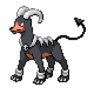
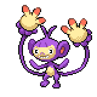

Location
Akuwa Aquarium

Before we move on, once again we won't be able to return for a while. If you've been skipping sidequests, I would suggest glancing over each chapter's sidequest/side activities to see if there's anything you want. Additionally, there's an "impossible" battle coming up that you can actually win, so if you want to make sure you have one of these Pokemon with you: A Pokemon with Quick Guard (Fletchling from Oceana Pier, Sawk, Meowstic, Zubat, or Mr. Mime). Some of them you may need a Heart Scale to relearn the move. Once you're ready, head into the Aquarium and meet up with Aelita. Once you enter the computer room behind the pool, you'll find that something happened from a police on the screen. The power will cut out, and you and Aelita will find yourselves in the midst of hundreds of Team Xen members. You'll soon be transported away.
Blacksteeple Castle - Day 1

| Item | Location |
Heart Scale |
Beneath the bed of the fourth cell from the left |
Ability Capsule |
Beneath the bed of the cell on the right |
Blacksteeple is a very linear, very story-heavy section of the game. There's not much side activities to do here, so as long as you follow the story you'll be alright. You'll first be introduced to Saki, who we were looking for to repair our snag machine, but then Aelita is taken away. Once you have control pick up the Heart Scale from the fourth bed and the Ability Capsule from the bed all the way at the end. Once you're done, head up the stairs on the bottom left of the map then out the main gate. From here, this area will be called the Courtyard. To the right is the Quarry and to the left is the Garden. The door you came out leads to the cells, above it behind the broken throne is a door to the Library. Up the stairs from the broken throne are two doors that lead to the Office. For now, we only have access to the Courtyard areas and the Quarry.
Head over to the Quarry, then all the way to the right and down to the beach. You'll be introduced to Saki's friends, Valarie and Adam.
 Watch the cutscene, then we need to interact with Saki in the top side of the map near an antenna.
Watch the cutscene, then we need to interact with Saki in the top side of the map near an antenna. After an alarm, you'll be taken to Nevad, the warden for this prison. He'll explain a little bit about what's going on, then send you away. Head back into the cells, but head straight instead of down the stairs. You'll explain to the trio what you learned, and the three of you will head back out to the Quarry to see if anyone's seen Aelita. You'll need to talk with a woman inside the quarry on top, and a man in the bottom side quarry. After that, head over to the beach and talk to Valarie. The three of you will reconvene in the Courtyard, where a mysterious person
After an alarm, you'll be taken to Nevad, the warden for this prison. He'll explain a little bit about what's going on, then send you away. Head back into the cells, but head straight instead of down the stairs. You'll explain to the trio what you learned, and the three of you will head back out to the Quarry to see if anyone's seen Aelita. You'll need to talk with a woman inside the quarry on top, and a man in the bottom side quarry. After that, head over to the beach and talk to Valarie. The three of you will reconvene in the Courtyard, where a mysterious person will show up. She'll be taken to the warden, and after that scene the day will end.
will show up. She'll be taken to the warden, and after that scene the day will end.
Blacksteeple Castle - Day 2

At the start of Day 2, you'll be assigned to the Garden for your work. Saki will tell you to visit the Library before hand, so head outside from the cells, up the stairs, and into the Library. The book with purple cover
 is on the first floor on the top right shelf. Read it, then go to the Garden and find the Absol statue. From there, you can actually walk through the trees on the right side of the statue.
is on the first floor on the top right shelf. Read it, then go to the Garden and find the Absol statue. From there, you can actually walk through the trees on the right side of the statue. You'll meet up with Braixen, who can talk thanks to Saki. Before you get too far, an alarm will ring calling for you and Saki, so you'll have to head back. In the area with Braixen though, you're able to catch Pokemon. I would strongly advise catching every Pokemon available here, but especially Abomasnow and Tangrowth and those two Pokemon are very helpful for an upcoming battle.
You'll meet up with Braixen, who can talk thanks to Saki. Before you get too far, an alarm will ring calling for you and Saki, so you'll have to head back. In the area with Braixen though, you're able to catch Pokemon. I would strongly advise catching every Pokemon available here, but especially Abomasnow and Tangrowth and those two Pokemon are very helpful for an upcoming battle.
Once you're back in the Garden, Emma will walk up and stand by the Absol statue. You'll have to talk to her to progress the story, then talk to Valarie to the south of the statue. After that, the day will end for the player character.
Emma
 will find herself in the Library, looking for clues. You can go around checking the bookshelves, but the one you need is on the first floor, the second bookshelf on the right.
will find herself in the Library, looking for clues. You can go around checking the bookshelves, but the one you need is on the first floor, the second bookshelf on the right. After that, inspect the first floor bookshelf in the center, where Emma will find a hidden door.
After that, inspect the first floor bookshelf in the center, where Emma will find a hidden door. After another cutscene, the day will end.
After another cutscene, the day will end.
Blacksteeple Castle - Day 3

| Trainer | Location |
Prison Guard Emile |
Secret Grove Forced story battle |
The third day will start the same way, except Valarie will let you know to meet by Braixen's shack. Go ahead and go over, and talk with Braixen. You'll hear Saki causing trouble, and a laser will shoot nearby and cause a lot of smoke. You, Valarie, and Braixen will find that the laser caused a gap in the trees, leading to a cave. Valarie will carve up some stairs, and we'll get a Mining Kit. We'll be able to use it in a bit. Head up the stairs, and eavesdrop onto the Xen Executive's conversation with your mom. After that, we'll need to head back to Saki
 in her cell, then up on the right wall in the Courtyard to find the antenna Saki broke. You and Adam will lure the guard over to the secret grove, and then you'll be put into a battle with Prison Guard Emile. Not long after that though, an alarm will sound and all of you will be put back into your cell.
in her cell, then up on the right wall in the Courtyard to find the antenna Saki broke. You and Adam will lure the guard over to the secret grove, and then you'll be put into a battle with Prison Guard Emile. Not long after that though, an alarm will sound and all of you will be put back into your cell.
Break out of your cell by using the Mining Kit on the cracked wall behind you. Mining works the same way as it does in Diamond and Pearl, you'll be able to keep mining as long as the crack along the top doesn't reach the end. You can always save before you start mining to farm for the items that you want. Once you break the wall, you can go through the tunnel and find PIANOLADY from the SS Oceania. She'll let you know that there's an exit ahead, and exit out to the Quarry area. Here, you have to avoid being caught by the guards, and you can also mine the rocks around here. Slowly or quickly, make your way back to Braixen in the cave. Head over and cut all the "R" boxes, and then cut the wires attached to the wall. With the system disabled, Madelis and Nastasia will come investigate, and you'll be thrown into a battle against Madelis.

Xen Executive Madelis

Cincinno, Level 36 |
Normal | Tail Slap |
|---|---|---|
| Rock Blast | ||
| Bullet Seed | ||
| Encore | ||

Tsareena, Level 37 |
Grass | Trop Kick |
| Low Sweep | ||
| Nature Power | ||
| Bounce | ||
|
Florges, Level 37 |
Fairy | Dazzling Gleam |
| Giga Drain | ||
| Nature Power | ||
| Synthesis | ||
|
Salazzle, Level 37 |
Fire | Flamethrower |
| Sludge Bomb | ||
| Poison | Foul Play | |
| Toxic | ||
|
Sharpedo, Level 38 - Focus Sash |
Water | Waterfall |
| Crunch | ||
| Dark | Psychic Fangs | |
| Bounce | ||
|

Houndoom, Level 39 - Wise Glasses |
Fire | Flamethrower |
| Dark Pulse | ||
| Dark | Sludge Bomb | |
| Nasty Plot | ||
Reward:  3744 3744
|
||
This can be a rough battle depending on your team. Her Pokemon are very speedy and can hit hard with a wide variety of coverage moves. The battle is fought in the Cave Field, so be careful of Cincinno's field-boosted Rock Blast and keep in mind that Nature Power will turn into a field-boosted Rock Tomb. Her Salazzle and Houndoom will hit very hard, but if you have a strong Rock-type a field-boosted move will take those two out pretty quickly. Sharpedo has Speed Boost and a Focus Sash, so it will survive a hit and get a speed boost, but is otherwise very frail. A strong move combined with some priority is solid. If you have Stealth Rocks, the field will double the damage of the entry hazard so Salazzle and Houndoom will be at 50% HP when they switch in, so take that into consideration. Once you defeat them, a full-scale prison break will happen.
Blacksteeple Castle - Breakout

Your mom will accompany you for the Garden area, and she has a level 65 Sylveon. You can take this opportunity to battle some Prison Guards for cash and exp, though most of them are avoidable. Once you get to the Courtyard, your mom will leave you and you'll need to head up to Nevad's office area. There's another Healing Spot and a PC here for you to use if you want. Head through the back door, and you'll have to battle Emma.

Hooded Girl Emma

Zoroark, Level 36 |
Dark | Dark Pulse |
|---|---|---|
| Flamethrower | ||
| Shadow Ball | ||
| Grass Knot | ||

Gardevoir, Level 37 |
Psychic | Psychic |
| Dazzling Gleam | ||
| Fairy | Shadow Ball | |
| Calm Mind | ||

Meganium, Level 38 |
Grass | Magical Leaf |
| Nature Power | ||
| Poison Powder | ||
| Leech Seed |
Not a challenging battle, though Gardevoir and Zoroark can still hit really hard. She does lead with Zoroark disguised as Meganium, so be a bit careful about that one. Otherwise, beat her then go back and heal up. There's a battle coming up where you will need a Pokemon with Quick Guard for, so take it out of the PC and into your team. After that, head back through the battle with Emma, then out and up into a ruined hallway to meet up with Aelita. Nevad will be waiting, and after some conversation you and Aelita will battle him.

Xen Executive Nevad
|
Tentacruel, Level 41 - Sitrus Berry |
Water | Scald |

Crabombinable, Level 41 - Occa Berry |
Ice | Ice Punch |
|---|---|---|---|---|---|
| Sludge Bomb | Drain Punch | ||||
| Poison | Dazzling Gleam | Fighting | Rock Slide | ||
| Blizzard | Crabhammer | ||||
|
Vikavolt, Level 42 |
Bug | Bug Buzz |
Manectric, Level 43 - Magnet |
Electric | Volt Switch |
| Thunderbolt | Thunderbolt | ||||
| Electric | Air Slash | Flamethrower | |||
| Thunder Wave | Hidden Power (Ice) | ||||
|
Froslass, Level 44 - Never Melt Ice |
Ice | Ice Beam |
Barbaracle, Level 45 - Sitrus Berry |
Rock | Rock Slide |
| Thunderbolt | Night Slash | ||||
| Ghost | Shadow Ball | Water | Razor Shell | ||
| Will-O-Wisp | X-Scissor | ||||
|
Reward: 3960
|
|||||
His Pokemon all outlevel your Pokemon, but this is also a 12v6 with Aelita as your partner. Aelita's Fighting-type team will struggle against Tentacruel, Vikavolt, and Froslass, so if you help her take out the threats to her team she should be able to contribute quite a bit. As long as you play the fight smart, you should be able to beat Nevad without much trouble.
After that battle and another cutscene, you'll be thrown into one more battle. This one is, under normal circumstances, an impossible battle.

Xen Dictator Madame X
|
Yveltal, Level 100 - Sitrus Berry |
Dark | Decimation |
|---|---|---|
| --- | ||
| Flying | --- | |
| --- | ||
|
Reward: 20000
|
||
Decimation is a 100% accurate, 1-hit KO priority move. This means that it gets blocked by Quick Guard, so you can just spam Quick Guard until it starts struggling. It does have a Sitrus Berry, meaning it will take 5 turns for it to finally faint itself in the process. If you don't have anything to tank it, you may need a Revive or two to have one Pokemon survive. Of course, winning isn't necessary, but there is unique dialogue if you manage to defeat her. Plus, you also get 20000 Pokedollars, which is a good chunk.
Whether you win or lose, Madame X will still chase you down with a sword. After a few cutscenes, your mom will take the hit for you and Emma will reveal herself to be Melia, who was supposed to have died in Amethyst Cave. The whole group will be able to escape out into sea on Team Xen's Battleship, which we will explore in the next part.
<< Side Activities The Battleship >>
×
Prison Guard Emile

Abomasnow, Level 36 |
Grass | Wood Hammer | |||
|---|---|---|---|---|---|
| Ice Shard | |||||
| Ice | Mist | ||||
| Ingrain | |||||
|

Ambipom, Level 35 |
Normal | Double Hit | |||
| Swift | |||||
| Screech | |||||
| Agility | |||||
|
Whiscash, Level 37 |
Water | Aqua Tail | |||
| Earthquake | |||||
| Ground | Snore | ||||
| Rest | |||||
|
Reward: 1776
|
|||||